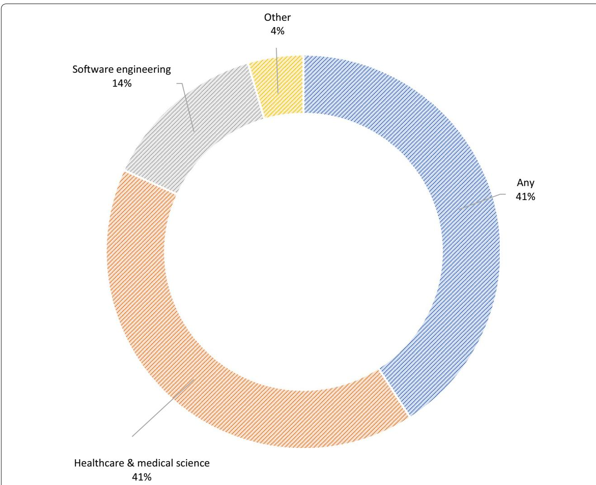

METHODOLOGY
Open Access
Online tools supporting the conduct Crc and reporting of systematic reviews and systematic maps: a case study on CADIMA and review of existing tools¶
Christian Kohl1*† , Emma J. McIntosh2†, Stefan Unger1†, Neal R. Haddaway3, Stefen Kecke1, Joachim Schiemann1 and Ralf Wilhelm1
Abstract¶
Systematic reviews and systematic maps represent powerful tools to identify, collect, evaluate and summarise primary research pertinent to a specific research question or topic in a highly standardised and reproducible manner. Even though they are seen as the “gold standard” when synthesising primary research, systematic reviews and maps are typically resource-intensive and complex activities. Thus, managing the conduct and reporting of such reviews can become a time consuming and challenging task. This paper introduces the open access online tool CADIMA, which was developed through a collaboration between the Julius Kühn-Institut and the Collaboration for Environmental Evidence, in order to increase the eficiency of the evidence synthesis process and facilitate reporting of all activities to maximise methodological rigour. Furthermore, we analyse how CADIMA compares with other available tools by providing a comprehensive summary of existing software designed for the purposes of systematic review management We show that CADIMA is the only available open access tool that is designed to: (1) assist throughout the systematic review/map process; (2) be suited to reviews broader than medical sciences; (3) allow for ofline data extraction; and, (4) support working as a review team.
Keywords: Review management, Managing systems, Systematic review software, Evidence synthesis, Time management, Rapid review, Text mining
Background¶
Systematic reviews were first established in the field of healthcare to support evidence-based decision making [1]. Their use is continuously expanding into other disciplines, including social welfare, international development, education, crime and justice,1 environmental management2 (including the impact assessment of crop genetic improvement technologies [2–4]), software engineering [5] and food/feed safety assessment [6].
Systematic reviews and related systematic maps follow standardised and rigorous methodologies aiming to ensure comprehensiveness, minimise bias, and increase transparency [7, 8]. Although seen as a “gold standard” when synthesising primary research, the central tenets of systematic review and map methodologies necessarily increase the complexity of the review processes and their resource requirements (i.e. time, money and personnel).
In order to support reviewers throughout the conduct of their syntheses, and to increase eficiency and maximise methodological rigour, software tools have been developed by a diverse set of providers to support review teams during the evidence synthesis process (the term evidence synthesis is used herein to cover both systematic reviews and systematic maps, which aim to characterise the available evidence-base rather than providing quantitative or qualitative answers to an impact or efectiveness question [8, 9]).
Potential drawbacks associated with these tools include that: (1) they may not be open access (i.e. free to use, an important consideration for non-profit organisations in particular); (2) they may be targeted to a particular research discipline, meaning that their applicability in other disciplines may be restricted; (3) they may not support the entire evidence synthesis process; and, (4) they may have been developed solely for systematic reviews and may not support the conduct of systematic maps.
Here, we present the open access online tool CADIMA that was established by Julius Kühn-Institut (JKI) during a recently completed EU-funded project called GMO Risk Assessment and Communication of Evidence (GRACE). The project’s working agenda included: (1) the conduct of a number of systematic reviews and maps for the purposes of increasing the transparency and traceability of information on potential risks and benefits associated with the deliberate release of genetically modified crops [10–17]; and, (2) the development of an open access online tool (CADIMA) to facilitate the conduct of systematic reviews and maps on agricultural and environmental questions. Due to the expertise available at the Collaboration for Environmental Evidence (CEE) and the overlap of topics covered by both institutions, a close collaboration between JKI and CEE was established to develop CADIMA.
Herein, we discuss how CADIMA compares with other available tools by providing a comprehensive summary of existing review management software, and also discuss possible future development of CADIMA. Existing reviews of available software and tools (e.g. [18]), have quickly become out of date since many new software packages have been recently released or are in development. In order to ensure the independence of the review reported in this manuscript and the assessment of how CADIMA compares to existing tools, the review part of this paper was solely conducted by EJM as she was/is not involved in the development of CADIMA.
Methods¶
Review of existing online tools¶
A series of searches was conducted for the purposes of comparing CADIMA with other available online tools to identify software packages designed to facilitate evidence synthesis. We excluded software that only supported isolated aspects of, rather than the majority of, the systematic review process (e.g. reference management in endnote, duplicate checking using the systematic review accelerator [19, 20], screening in Abstrackr [21], metaanalysis in comprehensive meta-analysis (CMA), or data extraction and quantitative synthesis in RobotReviewer [22]). For more details on these and other tools, see the SR toolbox: http://systematicreviewtools.com/.
The search strategy involved four approaches: (1) conducting online bibliographic database searches; (2) snowballing via general web searches (tracking backwards and forwards for studies via links in relevant websites); (3) screening targeted websites; and, (4) backwards and forwards citation searches of relevant publications (search methods are outlined in Additional file 1). Following the completion of the searches, 24 systematic review software packages were identified from across a wide range of disciplines (Table 1). Of these, two were excluded from the analysis; one has been discontinued (Slrtool [23]), and the developers of another product currently in development, DRAGON ONLINE (https://www.icf.com/solutions-and-apps/dragon-online-tool-systematic-review), did not respond to our request for further information.
The 22 remaining software packages were researched and trialed by EJM (where free access or free trials were available) and characterised according to a suite of features, including; the stages of the systematic review process supported, whether they are suitable for a team of reviewers, and their cost (Table 1). These features were chosen in part based on previous studies on user preferences for systematic review software functionality [24, 25]. Developers were contacted when insuficient information was available online or in publications about a software package. Where no further information was available, the characteristic was marked as ‘Unavailable’.
Introduction to CADIMA¶
CADIMA is a client–server software application and was developed by using the interactive management framework Scrum (http://www.scrumguides.org/) and the project management tool Redmine (http://www.redmine. org/). The user interface of the CADIMA web application requires a web browser, such as Mozilla Firefox or Google Chrome. CADIMA is coded with the programming language PHP V5.5 using the Yii V1.1 framework with the Bootstrap CSS extension (http://yiibooster.clevertech. biz/). The application runs on an Apache 2.4 web server and a Linux Ubuntu Server V14.04, and data are stored in a MySQL 5.5 database management system with a daily data backup stored for 6 months. CADIMA is permanently hosted and maintained by JKI and uses a SSL encrypted connection between the client and server.
The support provided by CADIMA mirrors the key steps of systematic reviews or systematic maps. CADIMA supports the following: (1) development of the review
Table1Comparison ofthe functionality ofcurrently available systematic review management software packages
| Software name | Ownership | Website | $Description^a$ | Intended field(s) of research | Available support | Stages of the SR process $supported^b$ | Web- online | Download- able | Supports offline working | Supports team of reviewers | Text mining features (for screening, data extraction or synthesis) | Open source | $Cost^c$ |
| CADIMA [32] | JKI—Julius Kühn-Institut | https://www.cadima.info/index.php/area/evidenceSynthesisDatabase | “CADIMA supports the conduct of systematic reviews and evidence/systematic maps by the provision of a freely available online tool.” | Any, particularly suitable for Environmental Evidence systematic maps and reviews | Development team is available to provide support or software modifications | Qu, Pi, Du, Sc, Co, Cr, Do | Yes | No | Yes (at data coding stage) | Yes | Text mining capabilities in development | No | Free |
| Colandr | Conservation International | www.colandrapp.com | “computer-assisted systematic mapping software for evidence synthesis” | Any, particularly suitable for environment and development sectors | Colandr Community website, videos, documentation | Pi, Se, Du, Sc, Co, Sy, Do | Yes | No | No | Yes | Machine learning approaches to assist with article screening and data extraction | Yes | Free |
| Covidence [33] | Covidence is a non-profit organisation | https://www.covidence.org/ | “Covidence is a not-for-profit service working in partnership with Cochrane to improve the production and use of systematic reviews for health and wellbeing.” | Healthcare and medical science, designed for Cochrane reviews | Detailed help documentation and demonstration videos. Contact support available | Du, Sc, Co, Cr | Yes | No | No | Yes | No | No | Range of packages e.g. ‘Single’: $240 USD per year, one review, unlimited reviewers |
| DistillerSR [34] | Privately held, Evidence Partners | https://www.evidencepartners.com/products/distillersr-systematic-review-software/ | “DistillerSR is the world’s most used systematic review software. It was designed from the ground up to give you a better review experience, faster project completion and transparent, audit-ready results.” | Any | 8X5 live technical support and detailed user manual with explanatory videos. Support for international character sets | Se (PubMed), Du, Sc, Co, Sy, Do | Yes | No | No | Yes | In development. Currently supports keyword $highlighting^d$ | No | Range of packages e.g. Student FREE: USD$0 and‘Faculty’: USD$75 per month |
| Software name | Ownership | Website | $Description^a$ | Intended field(s) of research | Available support | Stages of the SR process $supported^b$ | Web- online | Download- able | Supports offline working | Supports team of review- ers | Text mining features (for screening, data extraction or synthesis) | Open source | $Cost^c$ |
| Early review organizing software (EROS) [35] | Institute of Clinical Effectiveness and Health Policy | http://eros-system-atic-review.org/ rev-login.php | “EROS is a new web- based software designed spe- cifically to perform the first stages of a systematic review.” | Healthcare and medi- cal science | Email support and a user guide | Sc, Co, Cr | Yes | No | No | Yes | No | No | A donation for development (USD 600 per year for a team of up to four reviewers) is requested for non-Cochrane reviews (Cochrane reviews can use Covidence for free) |
| EPPI- Reviewer 4 [36] | EPPI-Centre | http://eppi.ioe.ac.uk/ CMS/Default. aspx?alias=eppi. ioe.ac.uk/cms/ er4& | “EPPI-Reviewer 4 is a multi-user web- based application for managing and analyzing data for use in research synthesis.” | Any | Detailed user manual and developers are avail- able with advice and to make modifica- tion where possible | Se, Du, Sc, Co, Cr, Sy, Do | Yes | No | No | Yes | Text mining to assist with identifying rel- evant studies | No | User fee £10 per user per month, plus shareable review fee £35 per month |
| Health Assess- ment Workspace Col- laborative (HAWC) [37, 38] | Collabora- tive initia- tive | https://hawcproject. org/ | “HAWC is a modular, content manage- ment system designed to store, display, and syn- theize multiple data sources for the purpose of producing human health assessments of chemicals.” | Healthcare and medi- cal science | Online docu- mentation http:// hawc. readthe- docs.io/ en/latest/ and Github repository. Requires knowledge of Python to run and to interpret help docu- mentation | Se, Sc, Co, Cr, Sy, Do | Yes | No | No | Yes | Unavailable | Yes | Free |
Table1continued
| Software name | Ownership | Website | $Description^a$ | Intended field(s) of research | Available support | Stages of the SR process $supported^b$ | Web- online | Download- able | Supports offline working | Supports team of reviewers | Text mining features (for screening, data extraction or synthesis) | Open source | $Cost^c$ |
| METAGEAR package for R [39] | Marc J. Lajeu- nesse | http://lajeunesse.myweb.usf.edu/metagear/metagear_ basic_vignette. html#introduction | "The metagear pack- age for R con- tains tools for facilitating sys- tematic reviews, data extraction, and meta-anal- yses." | Any | Online docu- mentation and the developer is avail- able for questions. Requires knowledge of R in order to run the software although there is a GUI interface for abstract screening | Sc, Co, Sy | No | Yes | Yes, pack- age operates offline | Yes | "PDF downloader to automate the retrieval of journal articles from online data bases; automated data extrac- tions from scatter-plots, box-plots and bar-plots" | Yes | Free |
| PARSIFAL | Parsifal is a non-profit organisa- tion | https://parsifal/ | "Parsifal is an online tool designed to support research- ers to perform systematic literature reviews within the context of Software Engi- neering." | Software engineer- ing | FAQs, online videos, Github repository (https:// github. com/ vitorfs/ parsifal) and email support available | Pi, Se, Du, Sc, Co, Sy | Yes | No | No | Yes | No | Yes | Free |
| Rayyan [40] | Qatar Com- puting Research Institute | https://rayyan.qcri. org | "Authors create sys- tematic reviews, collaborate on them, maintain them over time and get sugges- tions for article inclusion." | Any, close align- ment with Cochrane reviews | Online forum | Pi, Se, Du, Sc | Yes | No | Yes, using a mobile app | Yes | The support vector machine classifier learns from users' decisions about includ- ing and exclud- ing studies and scores unclassi- fied studies for likely relevance. Similarity graph function for exploring cita- tion networks | No | Free |
| Software name | Ownership | Website | $Description^a$ | Intended field(s) of research | Available support | Stages of the SR process $supported^b$ | Web- online | Download- able | Supports offline working | Supports team of review- ers | Text mining features (for screening, data extraction or synthesis) | Open source | $Cost^c$ |
| REviewER | Empirical Software Engineering Group | https://sites.google.com/site/eseportal/tools/reviewer | "REviewER aims at assisting researchers in the laborious process of conduction of systematic reviews." | Any, particularly software engineer-ing. | GitHub repository (https://github.com/bfsc/reviewer). No user guide. Advanced coding skills required | Qu, Pi, Se, Du, Sc | No | Yes | Yes, package operates offline | Yes | No | Yes | Free |
| RevMan 5 [41] (this software is no longer being developed) | Cochrane Community | http://community.cochrane.org/tools/review-production-tools/revman-5 | "Review Manager 5 (RevMan 5) is the software used for preparing and maintaining Cochrane Reviews." | Healthcare and medi- cal science, designed for Cochrane reviews | Online docu- mentation. RevMan 5 support accounts are only available to registered Cochrane authors | Pi, Sc, Co, Cr, Sy, Do d | No | Yes | Yes, package operates offline | Yes (cannot edit simulta- neously) | No | No | RevMan 5 is free for Cochrane Reviewers or purely academic use. Commercial users require a license |
| RevMan Web (will be available for beta- testing in 2017, building on Rev- Man 5) | Cochrane Community | http://community.cochrane.org/tools/review-production-tools/revman-web | "RevMan Web is a new, web-based platform for pre- paring and main- taining Cochrane Reviews." | Healthcare and medi- cal science, designed for Cochrane reviews | RevMan Web will integrate with several other Cochrane software packages | Unavailable | Yes | Unavailable | Unavailable | Unavailable | Unavailable | Unavailable | Unavailable |
| SESRA (supporting systematic literature reviews in software engineer-ing) [29] | UNIVALI—Universi- dade do Vale do Itajaí | http://sesra.net/ | "Collaborative research, auto- mated searches, online reference management, support to all the process phases and activities." | Any, par- ticularly designed for software engineer-ing | User guide and introduc- tory videos available in Portuguese only | Qu, Pi, Sc, Co, Sy, Do | Yes | No | No | Yes | No | Proposed in future | Free |
| SLR-tool [42] | ALARCOS Research Group | http://alarcos.esi.uclm.es/slrtool/ | "...a free tool... to be used by researchers from any discipline, and not only Software Engineering." | Any, par- ticularly designed for software engineer-ing | Unavailable | Qu, Pi, Du, Sc, Co, Cr, Do | No | Yes | Yes, pack- age operates offline | No | Yes, for example "...to cluster the documents by using the similarities among them, highlighting key words that identify each group of docu- ments." | No | Free |
| SLuRp (systematic literature unified Review program) [43] | See authors | https://codefeed-back.cs.herts.ac.uk/SLuRp/ | "...to support the complex task of managing large numbers of papers, sharing tasks amongst a research team and following the arduous and rigorous SLR methodology recommended by Kitchenham and Charters." | Software engineer-ing | No user guide, minimal support information on product website. Requires use of MySQL and Tomcat to run | Se, Sc, Co, Cr, Sy, Do | Partially | Unavailable | Unavailable | Yes | No | Yes | Free |
| SRDB.PRO— systematic review intel- ligence Platform | Privately held | https://www.srdb.pro/default | "...the first, enter- prise level Busi- ness Intelligence platform designed specifically to improve the way in which the pharmaceutical industry and healthcare consul- tancies conduct systematic reviews and data analysis." | Healthcare and medi- cal science, targeting the phar- maceutical industry and healthcare consultan- cies | User guide. Phone and email sup- port | Se (PubMed), Du, Sc, Co, Cr, Sy, Do | No | Yes | Yes, pack- age operates offline | Yes | No | No | SRDB.PRO Hosted is free for non-com- merial use and starts at £70/USD$119 per month for 1 active user. SRDB.PRO Enterprise is more expensive |
| SRDR (systematic review data repository) | Brown Evidence- based Practice Center | http://srdr.ahrq.gov/ | "...a Web-based tool for data extraction and storage of systematic review data." | Healthcare and medi- cal science | User manual, FAQs and training videos | Se, Co, Sy | Yes | No | No | Yes | No | No | Free |
| StArt (state of the art through systematic review) [44] | Labora- tory of Research on Soft- ware Engi- neering (LaPES) | http://lapes. dc.ufscar.br/tools/ start_tool | "...aims to help the researcher, giving support to the application of this technique [sys- tematic review]" | Software engineer- ing | The online StArt community provides a forum, tutorials and videos | Pi, Du, Sc, Co, Cr, Sy, Do | No | Yes | Yes, pack- age operates offline | No | Yes, calculates scores of likely relevance of articles and similarity between articles | No | Free |
| SUMARI (system for the unified manage- ment, assess- ment and review of informa- tion). (designed to replace JBI CReMS software) | Joanna Briggs Institute (JBI) | https://www.jbisu- mari.org/ | "SUMARI supports 10 review types, including reviews of effective- ness, qualitative research, eco- nomic evaluations, prevalence/inci- dence, aetiology/ risk, mixed meth- ods, umbrella/ overviews, text/ opinion, diagnos- tic test accuracy and scoping reviews." | Healthcare and medi- cal science, also social sciences and humanities | FAQs and video tutorials | Se, Sc (full text only), Co, Cr, Sy, Do | Yes | No | No | Yes | No | No | Limited access beyond JBI special users initially. Subscriptions will be made available via Wolters Kluwer |
| SWIFT-review (Sciome work- bench for interactive computer- facilitated text-min- ing) [45] | Privately held, Sciome | https://www.sciome. com/swift-review/ | "a freely available interactive work- bench which pro- vides numerous tools to assist with problem formula- tion and literature prioritization." | Healthcare and medi- cal science | Tutorial and user guide | Se (PubMed), Sc (works in concert with SWIFT- ACTIVE Screener), Co, Sy, Do | No | Yes | Yes, pack- age operates offline | Yes | Yes, the "software utilizes recently developed statistical modeling and machine learning methods that allow users to identify over- represented topics within the literature corpus and to rank-order titles and abstracts for manual screening" | No | Free |
| Software name | Ownership | Website | $Description^a$ | Intended field(s) of research | Available support | Stages of the SR process $supported^b$ | Web- online | Download- able | Supports offline working | Supports team of review- ers | Text mining features (for screening, data extraction or synthesis) | Open source | $Cost^c$ |
| SyRF (systematic review and meta-analysis facility) [46] | CAMA- RADES and NC3Rs | http://syrf.org.uk/ | “SyRF is a fully integrated online platform for performing systematic reviews of preclinical studies.” | Preclinical studies e.g. experimen- tal animal studies | Online con- tact form, online tutorials available on request. User guide, video tutorial and in app tutorials in develop- ment | Qu, Pi, Se (PubMed), Sc, Co, Cr, Sy | Yes | No (under develop- ment) | No (offline app under develop- ment) | Yes | Risk of bias items can be automatically extracted and machine learning is available to aid the screening process for English articles | No | Free |
ctive websites, correct as of 02/11/2017. EROS cost estimates were provided by email (Gabriel of results, Do generation of documentation/output of text, figures or tables to assist rticle screening/study selection, Co facilitates data coding/tagging and extraction to support meta-analyses, Cr critical appraisal/risk of bias ass databases). Excludes those which require search results to be manually uploaded, Du duplicate checking (e.g. automated marking of duplic etting up the review, with question formulation and/or stakeholder engagement, Pi scoping/pilot study, protocol development (e.g. PICO elemen m product websites, referenced documentation or through direct email contact with develop
protocol; (2) management of search results (including the identification of duplicates); (3) management and conduct of the study selection process (including the performance of a consistency check); (4) management and conduct of on- and of-line data extraction; and, (5) management and conduct of the critical appraisal process. In addition, CADIMA ensures thorough documentation of the entire evidence synthesis process and allows for review results to be made publicly available: i.e. documents can be made accessible to third parties if agreed by the review team. The permanent maintenance and further development of CADIMA is guaranteed by JKI and user support is provided to review teams via email. Furthermore, users can participate in online workshops or experiment using a test website before creating a full review.
In the following pages, we briefly describe CADIMA’s main features, starting from the registration and customisation of a review and its team, to the conduct and documentation of the evidence synthesis process. In addition, we describe and summarise the diferent tasks within the review team and the information formats that are currently supported during the evidence synthesis process (see Table 2).
Registering with CADIMA and user roles¶
Users must register with the program in order to access the full functionality of CADIMA, which is free of charge.3 By accepting CADIMA’s terms of service that regulate, besides others, the use of CADIMA and the handling of data (see Additional file 2), any registered user can initiate a new systematic review or map and can customise the review team. There are two diferent roles in a review team implemented in CADIMA. The ‘review coordinator’ manages the review and its team, and also performs more general tasks when compared to the one or more ‘review team members’ (see Table 2). Only the nominated members of the respective review team and the review coordinator can access the new evidence synthesis.
Structure of CADIMA¶
The menu structure of CADIMA mirrors the core steps and workflow of systematic reviews and systematic maps. This begins with the development of the review protocol (including the development of the review question), followed by the conduct of the literature search, study selection, data extraction, critical appraisal, data synthesis and the presentation of results. For each menu item, explanatory notes and submenus are provided. We now go on to explain the functionality of the diferent menu items in more detail.
Review protocol¶
At this stage, review authors are requested to detail information regarding the planned methods for the review, ensuring scientific rigour, transparency and repeatability. The input to CADIMA is provided by uploading remotely prepared blocks of text that correspond to key sections of a protocol. The overall format implemented in CADIMA resembles the draft of a protocol and has two major benefits: (1) it prevents important information from being unintentionally omitted; and (2) it facilitates peer-review of the protocol by ensuring that relevant information is included in the most appropriate section. Furthermore, CADIMA combines the respective text and generates one single document, which can then be formatted by the review team and submitted for peer-review.
Literature search¶
CADIMA is not a meta-search engine, such as PubMed or Scopus. Instead, CADIMA helps to structure and document the literature search by associating a search string with a search engine or further information source it was applied to, whilst the respective search results can be uploaded to CADIMA as RIS files. Following this, search results can be combined, duplicates removed and records screened (see below). In addition, to facilitate the study selection process at title/abstract stage, CADIMA highlights those reports where an abstract is missing.
Study selection¶
The study selection step includes the following key aspects: (1) definition of selection criteria; (2) automated calculation of a kappa-statistic to test inter-reviewer agreement4 when applying the defined criteria; (3) screening of the records from the literature list according to the selection criteria at title, abstract and full text stage; and, (4) extraction of studies from eligible records (an important step that recognises the diference between a study [i.e. an independent unit of research] and an article [i.e. an independent unit of publication]). During the screening process, title, abstract and full text are displayed together with the selection criteria during each respective stage. Where records are independently assessed by more than one reviewer and inconsistencies between reviewers occur, they will be automatically identified by CADIMA and the respective reviewers asked to solve those conflicts.
Table 2 Key features of CADIMA, diferent user roles and associated tasks and supported information formats used dur ing the synthesis process
| Step | Key features of CADIMA | Roles and tasks | Information format |
| Set up the review | Predefined input structure | RCInvite registered users to become part of the review teamDefine the title of the reviewDefine the question type (PICO, PIT, PO)Define if a systematic review or a systematic map will be performed | Manual entry |
| Protocol | Predefined input structure referring to the key chapters of a protocolCompile a drafted protocol document with potential annexes | RCMark those document blocks that should be compiled by CADIMAMake final protocol publicly availableAllEnter/upload the requested information | Manual entryUpload/download formats:- Docx-Xlsx-Pdf |
| Literature search | Documentation of the literature searchIndication of reports with missing abstractIdentification of duplicates | AllAllocate a search string to a search engine or a further information source it was appliedUpload of search results and duplicate removal | Manual entryUpload/download formats:- RIS |
| Study selection | Support for the:Definition of selection criteriaPerformance of a kappa-test- Takes a random sample of the identified reports to be rated by RC and/or further review team members- Kappa value will be providedOnline application of selection criteria- Title/abstract/full text will be co-displayed- Identification of discrepancies in the rating by RC and/or RMSelection of studies that should be included in the review | RCSet the criteria list as “final”Define those team members that should be involved in the kappa testDecide about the suitability of the criteria based on the provided kappa valueNominate team members to be involved during study selection- Decide about the application mode- Allocate identified reportsAllEnter selection criteriaIf nominated, apply criteriaExtract relevant studies | Manual entry |
| Data extraction | On- and offline data extraction | AllDefine critical appraisal criteriaDefine data extraction columnsMark those columns relevant for the critical appraisalPerform data extraction | Manual entryOnline data extraction- Manual entryOffline data extraction- Download/upload of the data extraction sheet as excel file |
| Critical appraisal | Co-display of extracted (meta-) data during the rating processOnline application of appraisal criteriaIdentification of inconsistencies in reviewer judgments | RCNominate team members to be involved during critical appraisalAllocate relevant studiesAllIf nominated, critically appraise included studies | Manual entry |
| Data synthesis | Compilation of the data extraction sheet and the results from the critical appraisal | AllPerform the statistical analysis by using the software package of their choiceUpload of synthesis results | Download format- XlsxUpload formats:- Xlsx- Docx-Pdf |
| Presenting data and results | Thorough documentation (including any decision made during) of- Literature search- Study selection- Critical appraisalCompilation of data extraction sheetOpt for publication on the web site | AllWrite up the reviewDecide about and upload information to be made publicly available | Download formats:- Xlsx- Docx-RISUpload formats:- Xlsx- Docx-Pdf |
This table illustrates the key features of CADIMA for each step within the evidence synthesis process, describes the diferent user roles and associated tasks (RC review coordinator, All the entire review team), and specifies the information formats supported for each step. For more detail see text
Data extraction and critical appraisal¶
CADIMA is designed to encourage best practice in systematic reviewing, such as the requirement that reviewers specify their critical appraisal criteria prior to data extraction. Critical appraisal criteria can refer to a specific bias under assessment (i.e. the internal validity of a study) and/or the generalisability of a study (i.e. its external validity). In addition, the critical appraisal judgement system (i.e. whether a distinction will be made between low, medium, high and unclear risk, or only between low, high and unclear risk etc.) and items for data extraction (i.e. which data should be extracted) must be defined. The data extraction sheet will automatically be generated by CADIMA and the reviewer can mark those data that are needed to inform critical appraisal.
CADIMA allows users to conduct either on- or of-line extraction of data and meta-data,5 by either directly entering information into CADIMA or by providing a download of the data extraction sheet as a spreadsheet file that can be uploaded once extraction is complete.
During critical appraisal, the appraisal criteria are used to assess the validity of included studies. CADIMA allows users to undertake critical appraisal online, while the extracted data relevant to the critical appraisal are shown together with the appraisal criteria. Where inconsistencies in coding decisions occur between two independent reviewers for one record, these will be automatically identified by CADIMA, and the respective reviewers are asked to resolve those conflicts.
Flexibility provided by CADIMA¶
CADIMA allows review steps to be modified and/ or updated during the conduct of the review, with the exception of the selection criteria, since a change in the selection criteria would require the de novo performance of the consistency check and all previously extracted information would be lost. The core steps do not need to be undertaken in order: for example search results can still be entered once the selection process has started, and the selection process does not need to be completed in order to start the data extraction or critical appraisal steps.
To support data synthesis activities, CADIMA provides the completed data extraction sheet and the results from the critical appraisal, as spreadsheets that facilitate data transfer and preparation for quantitative synthesis. These files can then be used by the review team to perform statistical analyses within the software package of their choice, such as R (https://cran.r-project.org/).
Presenting data and results¶
CADIMA facilitates thorough documentation of the review process, providing, besides others, the following information and data formats:
i. a flow diagram summarising the study selection process, satisfying PRISMA standards6 (docx),
ii. reference lists for each database (xlsx) and the final reference list after duplicate removal (xlsx and RIS),
iii. the outcomes of the consistency check and study selection across the diferent stages (title, abstract and full text) including the reasons for exclusion (xlsx),
iv. the results of the critical appraisal (xlsx),
v. the filled data extraction sheet (xlsx).
Furthermore, CADIMA ofers the possibility of uploading results generated by the review team, to make synthesis results available to third parties, i.e. displaying the documents on the web site and enable external users to download them. These features encourage a higher level of transparency than is common in publish systematic reviews.
CADIMA and other types of evidence synthesis¶
CADIMA is also suitable for assisting in the process of conducting other forms of evidence synthesis, including systematic maps [8, 9] and rapid reviews [26] since not all steps of a systematic review have to be completed within the program. Consequently, the data extraction sheet can be designed to house meta-data only, and the critical appraisal step can be skipped completely if deemed necessary by the review authors.
Review of existing tools¶
Of the 22 software packages identified as being suitable to support the systematic review or systematic map process, nine were advertised as suitable for users from any field of research, nine were designed for the health care and medical science sectors, three were designed primarily for software engineering and one for experimental animal studies (Fig. 1). The programs vary in terms of available support, and most ofered graphical user interfaces (GUI), although four required prior knowledge of coding or software development to use. Web-based functions were available for 15 of the packages and seven involved downloadable applications. Most packages were designed for a team of reviewers, an important consideration given many guidelines require more than one reviewer to be involved with screening (e.g. [7]). However, two packages did not provide this functionality. Of the primary stages of the systematic review process we identified, most software packages had the capacity to address article screening (most enabling title and/or title and abstract screening in addition to full text screening) (Table 3).

Fig. 1 Breakdown of the intended fields of research each of the 22 software packages were primarily designed fo
Machine learning and text mining features for use during screening, data extraction or synthesis stages are in their infancy, with only 10 software packages currently supporting or planning to support their use. To date these approaches have been incorporated into these tools in various ways, for example by assisting with article screening (e.g. Rayyan and EPPI-Reviewer), data extraction (e.g. METAGEAR package for R), and risk of bias assessments (e.g. SyRF). For further information about how text mining approaches have been efectively applied to systematic reviews, and more information about their potential future applications, see [27, 28]. Encouragingly, 16 software packages are freely available for non-commercial uses, and six are also open source. All of the software we assessed are available to use in English, although several lacked help documentation in English as they were designed primarily for use in another language (e.g. [29]). Furthermore, some programs have advanced capabilities to manage articles in other languages and other character sets (e.g. DistillerSR).
During trialing of the software packages (summarised in Table 1), several general issues were noted. Most software packages lacked customisability; this was often to ensure compliance with specific existing guidelines or protocols within a particular discipline area (e.g. the Kitchenham guidelines for systematic reviews in software engineering [5]). This limits the degree to which many of the software packages can be used between disciplines. Most of the software packages difer in the types of input files they accept, and many only accept one type of input file (e.g. PubMed output files). The most common file type is RIS. This is problematic in interdisciplinary studies when importing studies from a wide range of sources and grey literature databases, many of which do not provide standardised export features (e.g. Google Scholar https://scholar.google.co.uk/, EU Joint Research Centre— Publications Repository http://publications.jrc.ec.europa. eu/repository, OECD iLibrary http://www.oecd-ilibrary. org/). To help address this, EPPI-Reviewer developers have designed a RIS converter to convert other file formats such as CSV files to RIS format (http://eppi.ioe. ac.uk/cms/Default.aspx?tabid 2934).
Duplicate checking is an increasingly common feature (Table 3) that can provide valuable time savings, particularly if duplicate detection can be partially automated (e.g. EPPI-Reviewer). Automated import of abstracts and full-text PDFs is also an important time-saving feature in larger studies, but is not yet widely available (and is difficult when many studies are not open access, as in the field of conservation biology).
Discussion and outlook¶
There is increasing demand for information management systems which assist with the centralisation and management of the systematic review process, to improve eficiency and to facilitate teams of reviewers to collaborate. We have identified 22 software packages which provide this functionality, designed for users from a wide range of disciplines. There is a large degree of overlap between many of these software packages, however most have been developed with particular disciplines in mind and lack the customisability suitable for access and use by reviewers across disciplines. As a general observation, many developers appear to have developed these tools without an awareness of the full range of similar tools available (a point also noted in a recent systematic review [27]).
EJM (who was not part of the development team) trialled CADIMA and found it intuitive to use and noted it performed smoothly even with large datasets. A major benefit of CADIMA is the fact it is suitable for teams (vital for reviewers following certain guidelines e.g. [7]) and is free and well supported—an important consideration for students, small organisations and notfor-profits (even low monthly fees are barriers, as the typical review process can take over a year). CADIMA also ofers greater security than traditional approaches to review management, such as Microsoft Excel, when it comes to sorting records and tracing included articles between diferent stages of the screening and data extraction process. The ability to export files and work ofline easily with CADIMA was considered a great asset, although the linear structure of the application has so far precluded adjustments to review team membership between screening stages. The developers have taken this into consideration for future developments of the programme. As CADIMA combines many diferent stages of the review process in a single piece of software, it also has the advantage of enhancing transparency and replicability.
CADIMA is designed to provide important information to users in the form of prompts, which make the diference between a rigorous systematic review and a standard literature review, considerably reducing the barrier to entry for first time reviewers. These include protocol development prompts which mirror Collaboration for Environmental Evidence guidelines, and stages such as consistency checking. The structure and layout of CADIMA encourages users to document their methodology and screening criteria clearly, and also provides a location for record and methods to be hosted online, so that subsequent revisions can be undertaken easily.
Like CADIMA, the majority of software packages support teams of reviewers, require no prior coding knowledge and ofer a range of help and support, facilitating rapid learning and working with a team of individuals with difering degrees of experience. A handful of tools are particularly designed to lead the user in a stepwise manner through the review process, including CADIMA with its inbuilt guidance and clear layout, and SESRA [29], which mirrors the stages in the Kitchenham and Charters guidelines [5]. Others, such as EPPI-Reviewer, do not follow this structured approach, and users design the stages according to their needs, meaning they must be familiar with both the software and systematic review methodology.
No single software package guides the reviewer through all stages of a systematic review or map project (from question formation to the exporting of project documentation), meaning stages such as literature searches or analysis and writing up of results are often expected to be managed separately. This is also true for CADIMA, which provides support for the majority of the stages we assessed (Table 3), excluding built-in searching and quantitative synthesis. Just over half of the software packages are integrated with one or more publication databases to allow for built-in searching, however this inevitably limited them to certain databases and their associated disciplines, such as PubMed (medical and healthcare evidence, https://www.ncbi.nlm.nih.gov/pubmed/) in the case of DistillerSR, SRDB.PRO, SWIFT-Review and SyRF.
The principal advantage of using software to assist in managing the review process is to increase eficiency of time consuming tasks, to allow for eforts to be concentrated on the most important tasks—namely synthesis and analysis. CADIMA facilitates the importing and exporting of the results of searching and synthesis to allow literature searches and statistical analysis to be conducted flexibly, using alternative software, and focuses on simplifying the tracking large numbers of review articles throughout the process.
Table 3 Breakdown of the 22 software packages designed to support evidence syntheses, with the functionality to support diferent stages of the systematic review process
| Software name | Setting up the review | Scoping/pilot study | Literature searching | Duplicate checking | Article screening | Data coding | Critical appraisal | Synthesis | Documentation |
| E.g. | Facilitation of question formulation and/or stakeholder engagement | Protocol development, PICO* elements specified | Software integrated with publication databases | Automated marking of duplicates | For study selection | Tagging and extraction to support meta-analyses | Risk of bias assessments | Facilitates quantitative/qualitative syntheses of results | Output of text, figures or tables to assist with report writing |
| CADIMA | |||||||||
| Colandr | |||||||||
| Covidence | |||||||||
| DistillerSR | |||||||||
| EROS | |||||||||
| EPPI-Reviewer 4 | |||||||||
| HAWC | |||||||||
| METAGEAR package for R | |||||||||
| PARSIFAL | |||||||||
| Rayyan | |||||||||
| REviewER | |||||||||
| RevMan 5 | |||||||||
| RevMan Web | Data unavailable | ||||||||
| SESRA | |||||||||
| SLR-Tool | |||||||||
| SLuRp | |||||||||
| SRDB.PRO | |||||||||
| SRDR | |||||||||
| StArt | |||||||||
| SUMARI | |||||||||
| SWIFT-Review | |||||||||
| SyRF | |||||||||
| TOTAL | 5 | 10 | 13 | 11 | 20 | 19 | 12 | 15 | 13 |
PICO population (P), intervention (I), comparator (C) and outcome (O)
Future developments of CADIMA¶
Based on the results of the conducted review and received user feedback, the following issues will be considered during the next round of development for CADIMA:
To facilitate the exchange between CADIMA and different reference sources, additional input formats will be catered for, rather than RIS files only;
– Duplicates are detectable within CADIMA, but cannot be automatically removed in the current version. This can be quite time consuming in cases where many duplicates are identified. In such cases, review teams can automatically delete duplicates, for example by using EndNote and import the cleared list to CADIMA. In the future, an automated removal process will be implemented to CADIMA;
In order to speed up the study selection process at title/abstract stage, text mining approaches will be tested and potentially implemented in the event a demonstrably robust method is developed (currently the software RapidMiner7 is used to trial the use of text mining during the selection process);
To increase the time savings ofered by CADIMA, an automated upload of PDFs at full-text screening stage is planned;
Currently, the same reviewers have to participate during the study selection process at title, abstract and ful text stage. In the future, the possibility will be provided that diferent reviewers can be involved during the respective stages; and
Due to the limitations associated with the conduct of a full systematic review, further evidence synthesis approaches, such as rapid reviews, are evolving in order to save resources and to provide a timely answer to a posed question [26, 30]. This is especially important in the political context where time is a major consideration. A future goal for CADIMA is to allow people to customise their review, depending on the purpose of the synthesis and available resources.
CADIMA will continue to be developed to join several other software packages which make use of machine learning approaches to increase eficiency at the article screening stages of the systematic review process. This is an area that we believe will be of increasing interest to users, particularly for updating existing reviews (algorithms can be trained to identify relevant studies based on similarity to previously included studies) [31] and dealing with very large bodies of literature.
The use of new technology to assist the systematic review process is a rapidly developing area, demonstrated by the inclusion of three new or upgraded software packages expected to become live in 2017 in our review (plus another we were unable to find further information on; DRAGON ONLINE). Several other packages which came up in our search have been discontinued, suggesting security of funding, ongoing maintenance and continual improvement are essential considerations for the developers of these types of software packages to prevent them quickly becoming obsolete.
Conclusions¶
From a user perspective, we believe that CADIMA stands out in terms of ease of use, support for multiple users, support for on- or of-line data extraction, commitment to ongoing maintenance and financing, therefore meeting the criteria rated as most important by users of systematic review software in a recent study [25]. Many other free software packages require prior experience of software development and computer coding, or have limited capacity for ongoing maintenance. Aside from CADIMA, those that are continually updated and provide userfriendly graphical user interfaces, tend to be expensive for team reviews, making them less feasible options for small research teams or non-profit organisations.
Additional files¶
Additional file 1. Search strategy for identifying software programs listed in Table 1.
Additional file 2. CADIMA terms of service
Authors’ contributions¶
CK drafted the CADIMA part of the manuscript, EJM performed the review of software tools and drafted the associated parts of the manuscript, SU is responsible for the programming of CADIMA and all authors contributed to the final manuscript. All authors read and approved the final manuscript.
Author detail¶
1 Julius Kühn-Institut (JKI), Federal Research Centre for Cultivated Plants, Erwin‑Baur‑Strasse 27, 06484 Quedlinburg, Germany. 2 School of Geography and the Environment, University of Oxford, South Parks Road, Oxford OX 3QY, UK. 3 Mistra EviEM, Stockholm Environment Institute, 10451 Stockholm, Sweden.
Acknowledgements¶
The authors wish to thank Simone Frenzel for her help during the development of CADIMA, GRACE team members for their input and Andrew Pullin for his support when establishing the collaboration between JKI and CEE.
Competing interests¶
The authors declare that they have no competing interests. The review of software packages was not conducted by the authors responsible for developing CADIMA to ensure the independence of this analysis.
Availability of data and materials¶
Not applicable.
Consent for publication¶
Not applicable.
Ethics approval and consent to participate¶
Not applicable.
Funding¶
This work received funding by the EU-FP7 project: GMO Risk Assessment and Communication of Evidence (GRACE); Grant Agreement KBBE-2011-6-311957.
Publisher’s Note¶
Springer Nature remains neutral with regard to jurisdictional claims in published maps and institutional afiliations.
Received: 25 November 2016 Accepted: 5 January 2018 Published online: 01 February 2018
References¶
-
Guyatt G. Evidence-based medicine. A new approach to teaching the practice of medicine. JAMA. 1992;268:2420–5.
-
(EU) IR. Commission Implementing Regulation (EU) No. 503/2013 on applications for authorisation of genetically modified food and feed in accordance with Regulation (EC) No. 1829/2003 of the European Parlia ment and of the Council and amending Commission Regulations (EC) No. 641/2004 and (EC) No. 1981/2006. 2013, OJ L 157; 2013. p. 1–48.
-
Kohl C, Craig W, Frampton G, Garcia-Yi J, van Herck K, Kleter GA, Krogh PH, Meissle M, Romeis J, Spök A. Developing a good practice for the review of evidence relevant to GMO risk assessment. GMOs Integr Plant Prod. 2013;97:55–62.
-
Kohl C, Frampton G, Sweet J, Spök A, Haddaway NR, Wilhelm R, Unger S, Schiemann J. Can systematic reviews inform GMo risk assessment and risk management? Front Bioeng Biotechnol. 2015;3:113.
-
Kitchenham B, Charters S. Guidelines for performing systematic literature reviews in software engineering version 2.3. EBSE Tech Rep. 2007;1–65.
-
EFSA. Application of systematic review methodology to food and feed safety assessments to support decision making. EFSA J. 2010;8(6):1637.
-
CEE. Guidelines for systematic review and evidence synthesis in environmental management. Version 4.2; 2013. p. 1–80.
-
James KL, Randall NP, Haddaway NR. A methodology for systematic mapping in environmental sciences. Environ Evid. 2016;5:7.
-
Bragge P, Clavisi O, Turner T, Tavender E, Collie A, Gruen RL. The global evidence mapping initiative: scoping research in broad topic areas. BMC Med Res Methodol. 2011;11:92
-
Gathmann A, Priesnitz KU. What is the evidence on the inheritance of resistance alleles in populations of lepidopteran/coleopteran maize pest species: a systematic map protocol. Environ Evid. 2014;3:13.
-
Gathmann A, Priesnitz KU. How susceptible are diferent lepidopteran/ coleopteran maize pests to Bt-proteins: a systematic review protocol. Environ Evid. 2014;3:12.
-
Priesnitz KU, Vaasen A, Gathmann A. Baseline susceptibility of diferent European lepidopteran and coleopteran pests to Bt proteins expressed in Bt maize: a systematic review. Environ Evid. 2016;5:27.
-
Meissle M, Naranjo SE, Kohl C, Riedel J, Romeis J. Does the growing of Bt maize change abundance or ecological function of non-target animals compared to the growing of non-GM maize? A systematic review protocol. Environ Evid. 2014;3:7.
-
Kostov K, Damgaard CF, Hendriksen NB, Sweet JB, Krogh PH. Are population abundances and biomasses of soil invertebrates changed by Bt crops compared with conventional crops? A systematic review protocol. Environ Evid. 2014;3:10.
-
Kostov K, Krogh PH, Damgaard CF, Sweet JB, Hendriksen NB. Are soil microbial endpoints changed by Bt crops compared with conventional crops? A systematic review protocol. Environ Evid. 2014;3:11.
-
Sweet J, Kostov K. What are the efects of the cultivation of GM herbicide tolerant crops on botanical diversity? A systematic review protocol. A systematic review protocol. Environ Evid. 2014;3:8.
-
Garcia-Yi J, Lapikanonth T, Vionita H, Vu H, Yang S, Zhong Y, Li Y, Nagelsch neider V, Schlindwein B, Wesseler J. What are the socio-economic impacts of genetically modified crops worldwide? A systematic map protocol. Environ Evid. 2014;3:24.
-
Marshall C, Brereton P. Tools to support systematic literature reviews in software engineering: a feature analysis. In: International Symposium on Empirical Software Engineering and Measurement; 2014. p. 296–9.
-
Practice CfRiEB. The systematic review accelerator. Centre for Research in Evidence Based Practice; 2017.
-
Rathbone J, Carter M, Hofmann T, Glasziou P. Better duplicate detection for systematic reviewers: evaluation of systematic review assistant-deduplication module. Syst Rev. 2015;4(1):6.
-
Wallace BC, Small K, Brodley CE, Lau J, Trikalinos TA. Deploying an interac tive machine learning system in an evidence-based practice center: abstrackr. In: Proceedings of the ACM International Health Informatics Symposium (IHI); 2012. p. 819–24.
-
Marshall IJ, Kuiper J, Wallace BC. RobotReviewer: evaluation of a system for automatically assessing bias in clinical trials. J Am Med Inform Assoc. 2016;23:193–201.
-
Barn BS, Raimondi F, Athappian L, Clark T. Slrtool: a tool to support collaborative systematic literature reviews. In: Proceedings of the 16th International Conference on Enterprise Information Systems (ICEIS-2014) Science and Technology Publications, Lda.; 2014. p. 440–7.
-
Hassler E, Carver JC, Hale D, Al-Zubidy A. Identification of SLR tool needs—results of a community workshop. Inf Softw Technol. 2016;70:122–9.
-
Marshall C, Brereton P, Kitchenham B. Tools to support systematic reviews in software engineering: a cross-domain survey using semi-structured interviews. In: Proceedings of the 19th International Conference on Evaluation and Assessment in Software Engineering—EASE ‘15; 2015. p. 1–6.
-
Collins A, Coughlin D, Miller J, Kirk S. The production of quick scoping reviews and rapid evidence assessments: a how to guide. London: Joint Water Evidence Group; 2015.
-
O’Mara-Eves A, Thomas J, McNaught J, Miwa M, Ananiadou S. Using text mining for study identification in systematic reviews: a systematic review of current approaches. Syst Rev. 2015;4:5.
-
Thomas J, McNaught J, Ananiadou S. Applications of text mining within systematic reviews. Res Synth Methods. 2011;2:1–14.
-
Molléri JS, Benitti FBV. ARS—Uma abordagem para automatização de revisões sistemáticas da literatura em engenharia de software: Relatório Técnico. Itajaí, Brazil; 2013.
-
Khangura S, Konnyu K, Cushman R, Grimshaw J, Moher D. Evidence sum maries: the evolution of a rapid review approach. Syst Rev. 2012;1:10.
-
Roll U, Correia RA, Berger-Tal O. Using machine learning to disentangle homonyms in large text corpora. Conserv Biol. 2017. https://doi. org/10.1111/cobi.13044
-
CADIMA. Quedlinburg, Germany: Julius Kühn-Institut; 2017.
-
Covidence systematic review software. Melbourne, Australia: Veritas Health Innovation.
-
DistillerSR. Ottawa, Canada: Evidence Partners.
-
Glujovsky D, Bardach A, García Martí S, Comandé D, Ciapponi A. EROS: a new software for early stage of systematic reviews. Value Health. 2011;14:A564.
-
Thomas J, Brunton J, Graziosi S. EPPI-reviewer 4: software for research synthesis. EPPI-Centre Software. London: Social Science Research Unit, Institute of Education; 2010
-
HAWC. Health Assessment Workplace Collaborative. 2013
-
Shapiro A, Rusyn I. Health assessment workspace collaborative (HAWC) project overview; 2014.
-
Lajeunesse MJ. Facilitating systematic reviews, data extraction, and meta-analysis with the METAGEAR package for R. Methods Ecol Evol. 2015;7:323–30.
-
Ouzzani M, Hammady H, Fedorowicz Z, Elmagarmid A, Chalmers T, Smith H, Blackburn B, Silverman B, Schroeder B, Reitman D, et al. Rayyan—a web and mobile app for systematic reviews. Syst Rev. 2016;5:210.
-
Review Manager (RevMan) Version 5.3. Copenhagen: The Nordic Cochrane Centre, The Cochrane Collaboration; 2014.
-
Fernández-Sáez AM, Genero Bocco M, Romero FP. SLR-Tool a tool for performing systematic literature reviews. In: ICSOFT 2010—Proceedings of the 5th International Conference on Software and Data Technologies. 2010; 2:157–66.
-
Bowes D, Hall T, Beecham S. SLuRp: a tool to help large complex systematic literature reviews deliver valid and rigorous results. In: Proceedings of the 2nd international workshop on Evidential assessment of software technologies—EAST ‘12; 2012. p. 33–6.
-
Fabbri S, Silva C, Hernandes E, Octaviano F, Di Thommazo A, Belgamo A. Improvements in the StArt tool to better support the systematic review process. In: Proceedings of the 20th International Conference on Evalua tion and Assessment in Software Engineering—EASE ‘16 2016. p. 1–5.
-
Howard BE, Phillips J, Miller K, Tandon A, Mav D, Shah MR, Holmgren S, Pelch KE, Walker V, Rooney AA, et al. SWIFT-Review: a text-mining work bench for systematic review. Syst Rev. 2016;5:87.
-
Systematic Review and Meta-Analysis Facility (Syrf). Edinburgh, UK: CAMARADES-NC3Rs; 2017.
Submit your next manuscript to BioMed Central and we will help you at every step:¶
• We accept pre-submission inquiries
• Our selector tool helps you to find the most relevant journal
• We provide round the clock customer support
• Convenient online submission
• Thorough peer review
• Inclusion in PubMed and all major indexing services
• Maximum visibility for your research
Submit your manuscript at www.biomedcentral.com/submit